F1nal Lap
Circuitos
{{ selectedCircuit.name_GP }}
Vueltas: {{ selectedCircuit.laps }} | Longitud: {{ selectedCircuit.length }}
Vuelta rápida: {{ selectedCircuit.lap_record }}
Mejores estrategias:
Estrategia {{ estrategia.estrategia }} ({{
estrategia.paradas
}}
paradas):
- Salir con: {{ estrategia.stints[0].compuesto | titlecase }}
- Parada {{ i + 1 }}: {{ stop.compuesto | titlecase }} en la vuelta {{ stop.vuelta }}
{{ circuito.name_GP }}
Vueltas: {{ circuito.laps }} | Longitud: {{ circuito.length }}
Vuelta rápida: {{ circuito.lap_record }}